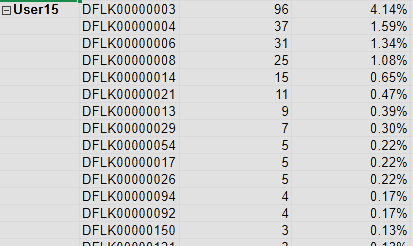

JPD's Audit Data
Blatant Abuse and No Accountability
Flock Overview
We wanted to wait to share this with you until we received Joplin's unredacted data or the city denied our objections to the last record request. Unfortunately, we have reason to believe the city is doing something in response to our requests. The data presented here seems to point to an offier using the system for personal reasons to run unsactioned surveillance on a private citizen who is under no active investigation. This activity may be even have criminal consequences. We want everyone following this issue to hear the cold hard facts and compare them to whatever the city says or does next. If you haven't seen our last post yet, make sure you also see the evidence for how the purchase ignored policies and rules.
We want to make sure everyone understands what the Flock system is and what it is capable of before we get into the audit files and what they show. We often talk to people who have no idea what these cameras are or that they even exist. Our very own Chief Pearson put it very simply though: These are like having police eyes at a location 24 hours a day (paraphrasing). But it's actually not. Police eyes cannot do anything near what these cameras can.
Flock ALPRs take a picture whenever any movement is detected. Then it looks for patterns in the picture that it "thinks" are your license plate. It runs optical character recognition (OCR) on the picture which turns patterns into text. This last part is also not always perfect.
Once the camera has your license plate, the system also records other information about your vehicle. Bumper stickers, damage, modifications, and so on. These features of your car are searchable in the Flock database. The location of the picture is stored and kept for 30 days. The pictures themselves are also kept for 30 days. At least some of which are kept on the camera itself unencrypted.

At the least, your driving history around town is visible to anyone JPD has shared with. Sharing can include more data as well though, such as raw footage. We have 52 pages of agencies JPD has some sort of sharing relationship with on our Facts page
In addition to all of these agencies having direct access. There are documented instances of federal law enforcement gaining access to this system by using a local officer's account. This is usually just a simple request from a federal cop to a local one.
JPD also has a sharing agreement with Lowe's home improvement. We point this out because it is a fourth amendment loophole many people are not aware of. The government is not allowed to surveil you in many situations. However, they are often allowed to get around this if a private entity shares the surveillance data with them. As more corporations adopt systems like Flock, residents should be aware of this.
Flock is actively working to add AI features for things that many call "predictive policing." For example, the ACLU says that Flock will be reporting driving patters their AI considers suspicious to police. Their AI can also track "convoys" of vehicles. The EFF has found evidence of abuse of this feature by police targeting Romani Americans. Racial slurs were used as reasons in Flock's reason field.
There is a lot to this system and the company, but this gives you an idea. We have more resources on our homepage and our first blog post to learn more.
Oversight... JPD has it right? Nope!
FBI CJIS standards mandate the law enforcement agencies conduct regular audits of activity within criminal justice systems that contain "sensitive" information. We think 30 days of location history as well as details about our vehicles is quite sensitive information. Not meeting this standard can be an issue for an agency's access to law enforcement systems, like those provided by the FBI. We don't believe these audits are being conducted. We will get to why soon.
JPD has no:
- policy on Flock LPRs or similar surveillance.
- policy on sharing with other agencies.
- agreement it holds other agencies to when searching our location data or other data.
- Public Transparency portal (according to our information, a FREE feature of FlockOS)
All of this is important because they have no documented standards of use for police officers. There is no clear definition of what is and is not acceptable when using the system. Officers are not required to articulate probable cause, reasonable suspicion, or even enter a case number. This system is wide open for JPD to use as they wish as far as policies go and puts the city at legal risk.
Flock has recently hidden key fields from audit logs of other agencies that use our cameras. These fields include the license plate and user/officer name. Without these fields it is possible to see that our data was used, but it is impossible to tell if it was appropriate use. JPD literally cannot audit other agencies who search our location data.
This is all very serious, but I'm sure we can trust our local officers, right? No!
We have strong evidence of misuse of this system within our very city. This is made worse because the City does not appear to have followed proper procedures when purchasing this product. We are going to show the abusive patterns we have seen here and now. We will walk you through each chart and what it means. Although this data is public record, we have anonymized the data (plate numbers and officer names) out of an abundance of caution.
The data provided to us by the city would not have been able to show these patterns. They hid the same fields that Flock does that prevent auditing of third party agencies. However, we obtained this data from Mukilteo, WA. An open records request there produced huge numbers of audit logs showing search activity from other agencies. We extracted Joplin's data and used it to create the reports the City does not want you to see. This data covers searches that used Mukilteo, WA cameras from the dates of January 1, 2025 until October 20, 2025.
Here we see a chart showing the number searches conducted by a single user. In our logs, Joplin has 41 users. You will notice that three users make up over half of the department's search activity. An auditor would see this and want to look into these accounts further to determine if they are being shared, hacked, or abused.
Here we see a table showing the share of searches of one plate out of the entire department. You will notice that plate DFLK00000001 and DFLK00000002 make up very large percentages of the department's total searches. These individuals have been tracked by over twenty five percent of the searches conducted by JPD. An auditor would see this and want to look into these plates to see why they make up such a large share of department activity. These are the plates that inspired this project and the entire reason we are here today.
Victims
DFLK00000001 is the primary victim in our investigation. This person's plate has been searched since the beginning of our logs on January 1 2025 until October 12, 2025. The city produced audit logs to us that were redacted for November and December, but we were able to use them to confirm this activity was present in December 2025 as well. This plate was searched by User22 only. User22 used the reasons "DWI" or "Warrants" only. No case numbers. This plate was searched 394 times in our logs.
DFLK00000002 is the secondary victim in our investigation. This plate perhaps belongs to the same person as the first plate, but we do not know. What we do know, is that this plate was only searched in tandem with the first plate and by User22 as well. In our logs, it was searched from January 27 to March 27. This plate was searched 147 times in our logs. These plates were searched at all times of day and night. There are often multiple searches in one day. All of this looks like a very obsessive pattern.
Here is another audit report that could have helped detect this. User 22's search activity for Plates 1 & 2 were significantly higher than any other plate in their search history. Again, if an auditor saw this, they would want to ask questions about these plates.
There's More
This research was conducted on a set of logs from outside of Joplin. While the data that exists is accurate, it is not complete. We know more searches exist than what are in our logs and more patterns may need to be found. HaveIBeenFlocked's data for these plates is even worse. We see there that the tracking span is 399 days for our primary victim and 317 for the secondary victim. The number of searches for each plate is 1,503 and 603. While these numbers are much more startling, we felt we could not rely on it alone without examining the data ourselves. We believe this website is at least accurate enough to examine trends in use among agencies.
They also show several more interesting statistics on JPD:
- Largest number of cameras searched: a whopping 99,388 cameras nationwide were searched for one plate by JPD.
- Largest number of networks searched: 6,555, while not exactly 1:1, this is a rough estimate of the number of agencies.
- Percentage of cases with no case number: 97.4%
- Percentage of cases with a 1 word justification: 84.9% (such as "investigation", "suspicious", or "drugs")
Conclusion
The activity presented here is startling and damning. One user's account at JPD has surveilled people for around a year without detection. We see no conceivable way the Joplin Police Department is auditing these logs. This activity was blatant and obvious if anyone had bothered to take a look. We were able to find this data, file records requests, create a website, and share them in our spare time. The city on the other hand is required by, at minimum, CJIS standards to audit these logs as their duty. In addition, there is strong reason to believe this purchase was not properly authorized as we have covered. There was also no deliberation by the City Council, which means the people had no opportunity to express concerns, ask for safeguards, or demand changes to the contract.
We have little faith the city will cover all of these lapses themselves. In addition, with the council's preference for fast tracking ordinances using "emergency" language, we believe city employees may try to get the council to retroactively adopt the Flock contract. We believe that this must be halted if attempted so that residents may understand this issue and voice their opinion.
We also believe further investigation is still warranted. We have contacted state authorities and alerted them to our findings around these logs as well as the purchase irregularities. While user22 stuck out like a sore thumb, there are other users with patterns that must be investigated, like user15.
This system must be removed or severely curtailed to protect residents and their privacy.
Note: We are sorry if this post feels rushed. We wanted to get this out to our neighbors ASAP. We will continue our work and bring you more interesting information from Joplin.